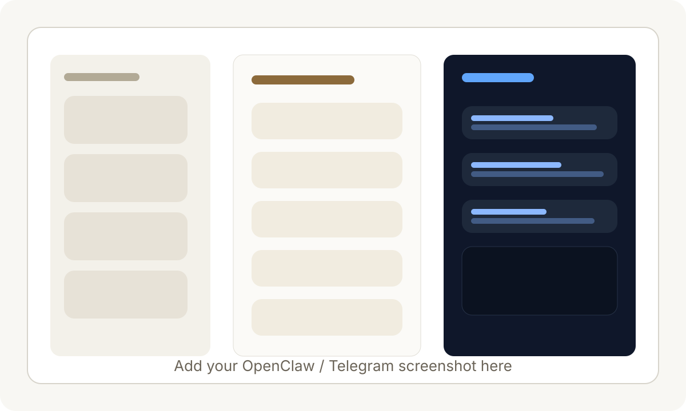

Running AI Locally: why I tested Ollama, OpenClaw, Pi Agent and other setups on my own machine
This experiment started from a simple question: if AI is becoming part of modern work, can I run useful AI tools locally and reduce recurring API cost at the same time? I wanted to test that idea in a hands-on way instead of only reading about it.
Ollama test video
Local LLM running on my systemA short clip from my local Ollama setup. The point here was not just to install it once, but to verify that I could actually run the model, interact with it, and understand the practical user experience.
OpenClaw / Telegram setup
Agent workflow snapshot
This section is ready for your OpenClaw and Telegram screenshot. I added a placeholder for now because I could not safely identify the exact screenshot file on your desktop.
Why I even tried local AI
Ai is cool everyone of us knows this, but the moment usage becomes regular, API costs also become part of the equation. That naturally pushed me toward local AI.
The promise is attractive: run models on your own machine, keep more control over your setup, learn how these tools actually work, and reduce dependence on paid cloud usage. For someone who likes experimenting with systems, workflows, and cost efficiency, this is a very natural thing to test.
This is more key for local businesses as current state of the art ai agents and tools are expensive and using larger 1T parameter models are not feasible for simpler tasks.
What I explored
I tested Ollama as the easiest entry point for running models locally. I also looked into agent-style setups such as OpenClaw and Pi Agent because I wanted to go beyond simple chat and understand whether local systems could support more active, assistant-like workflows. The larger idea was to see if I could create an affordable personal AI stack instead of depending fully on hosted tools.
That matters to me because good tools are not only about capability. They are also about repeatability. If something can run locally with acceptable quality, then it opens the door for more experimentation without worrying about every token, every prompt, or every trial adding to cost.
What worked well
The first positive result was simple but important: local AI is real enough now that an individual can install it, run it, and meaningfully interact with it without enterprise infrastructure. That alone is useful. It means the barrier to learning has come down.
Ollama in particular makes local model testing feel approachable. It gives a practical way to try different models, understand performance differences, and develop intuition around prompts, latency, and hardware limits. That kind of hands-on experimentation is valuable because it turns AI from an abstract topic into a working tool you can evaluate yourself.
Agent tools were also useful from a learning perspective. Even when they were imperfect, they helped me understand how AI systems are being wrapped into workflows, messaging tools, and semi-automated action loops. That is important because the future of AI for everyday work is not only chat windows. It is AI connected with tasks, apps, and decisions.
Where local AI still feels limited
After trying multiple setups, my overall conclusion is that local AI is promising but still not fully optimised for dependable daily use in many practical situations. You can absolutely run it. You can learn from it. You can demonstrate initiative through it. But when you compare it with stronger cloud systems, some limitations become obvious.
The first issue is consistency. Local models may respond well on one task and then drop in quality on the next. The second issue is speed versus quality. Better outputs usually need heavier models, and heavier models demand more from local hardware. The third issue is polish. Many local tools still feel like experimental ecosystems rather than smooth production-grade systems.
Agent workflows make this even clearer. Running an agent locally sounds exciting, but reliability matters more than the concept. If the model is weak, context handling is messy, or the setup breaks too easily, then the workflow becomes harder to trust for serious work. That does not make the effort a failure. It simply means we are still early.
So my conclusion is balanced: local AI is already useful for testing, learning, privacy-sensitive experiments, and low-cost iteration, but it still does not consistently replace better hosted systems when you need stronger output and smoother execution.
My honest takeaway
while all the ai agents when run using cloud api, runs smoothly, using local llm for agents is far off, as even the lightest of the models, take decent amount of time just to output, so for time being, i would not recommend using local llm for agents, but it is a good thing to keep an eye on, as it may become useful in the future.
Local AI taught me two things at once: first, the future is clearly moving toward more personal and affordable AI access; second, today's local setups still need maturity before they can replace the best hosted tools for reliable everyday work.